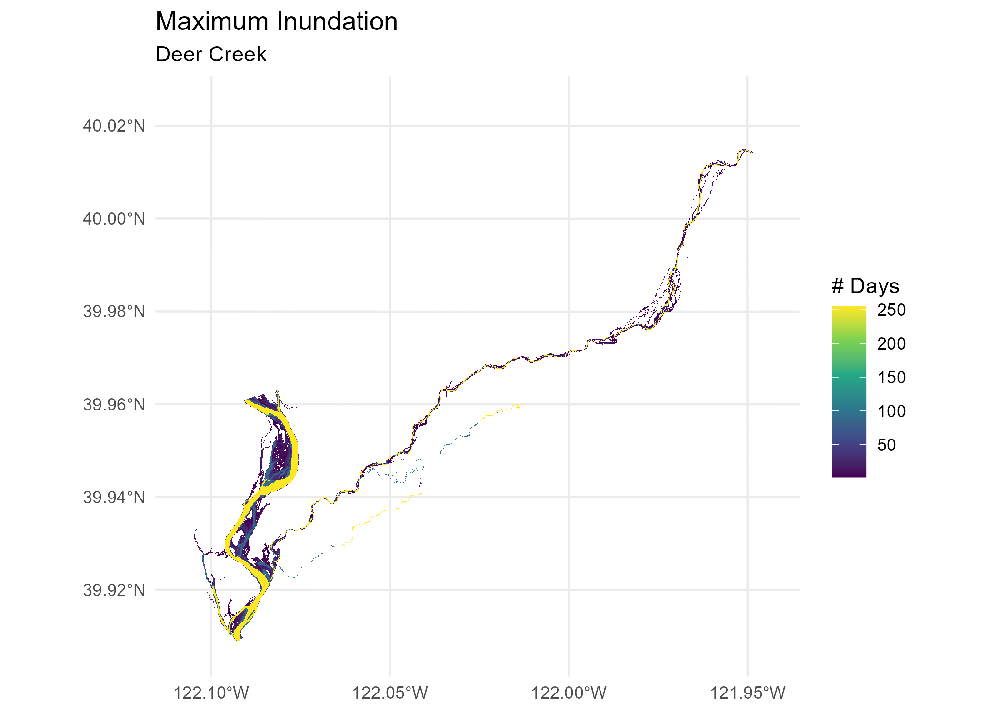
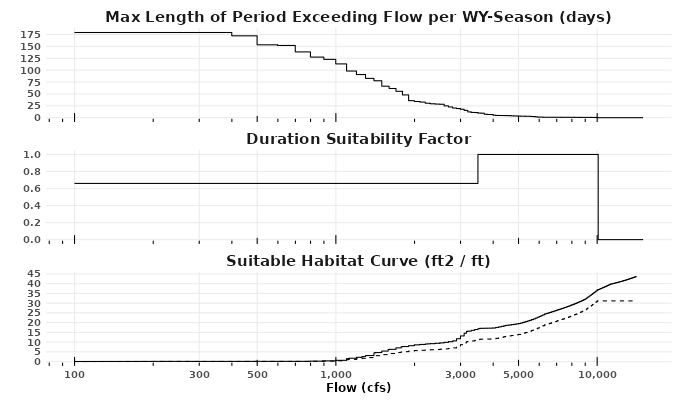

Duration Analysis
The habitat areas (flow-to-suitable-area curves) predicted by the Statistical Model are derived from depth- and velocity-based habitat suitability index (HSI) criteria only. Duration of inundation was not included at the statistical model step because it does not have the same one-to-one predictable relationship with flow: the duration of inundation at a given flow will vary by local hydrology and by water year. Sometimes we might be interested in simulating a historic hydrology, other times we might be considering a potential future hydrology, so the ability to vary the inundation duration factor is necessary.
Spatial Method
To precisely apply suitability criteria for inundation duration, inundation duration factors would need to be applied at the individual grid cell level in the same manner as depth and velocity.
For example, a series of depth raster grids at different flows,
calculated using a hydraulic model, can be used to determine the first
inundating flow for a given grid cell. (For raster models, this can be
calculated using the raster_first_inundating_flow
function in habistat.) This example is shown for the Deer Creek
hydraulic model:

Given a hydrograph for a particular water year, a relationship can be
derived between flow and the number of contiguous days in a water year
at which that flow is exceeded. This method is implemented in the
habistat function duration_calc_days_inundated.

Combining the previous two steps, a spatial map of inundation duration can be created for this particular water year.

These duration values can then be used, in the same manner as depth and velocity, to calculate a habitat suitability index at each model grid cell.
However, for training the statistical model in habistat, we need a single flow-to-suitable-area curve for each reach to feed into the statistical model–not a series of curves for every potential hydrology.
Non-Spatial Method
To solve this issue, habistat includes a simplified method of applying inundation duration criteria to an already generated flow-to-suitable-area curve, approximating a duration-weighted estimate:

Input flow-to-suitable-area curve
We start with the static depth and velocity based flow-to-suitable-area curve, predicted by the habistat Statistical Model. The same method could also be applied to a flow-to-suitable-area curve calculated through a different manner.
Hydrograph Datasets
Next, we pull a hydrograph and calculate the inundation duration at each flow. To summarize the hydrology of a water year, the maximum contiguous days exceeding each given flow is calculated.
One inundation duration curve is calculated per salmonid run, per water year type group.
Salmonid Runs
To capture only ecologically relevant time windows, we filter the hydrographs by relevant months for the salmonid run of interest: CITE?
| Run | Rearing | Spawning |
|---|---|---|
| Fall | Jan - Jun | Aug - Oct |
| Late Fall | Apr - Dec | Jan - Apr |
| Winter | Jul - Mar | May - Aug |
| Spring | Nov - May | Aug - Oct |
| Steelhead | Jan - Dec | Jan - Mar |
Water Year Type Groups
Duration calculations are conducted for as many historical water years as are available in the streamgage data, and averaged across all water years within a given water year type. Water year type classifications are regrouped simplified into Dry (“Critical Dry” or “Dry”), Normal (“Below Normal”, “Above Normal”), and Wet (“Wet”) classes.
Hydrograph Scaling
If the streamgage being used is not located at the prediction point (), then the streamgage is scaled to the prediction point using drainage area () and mean annual precipitation () ratios. These variables are derived from the habistat predictor variable dataset for the nearest NHD flowline. This method is consistent with the flow scaling used for Watershed Aggregation.
Hydrograph data was obtained from CDEC and preprocessed. All active
flow gages on cv_mainstems
flowlines are included. Results are stored in:
-
streamgage_attr= attributes -
streamgage_geom= geometries -
streamgage_da_attr= DA and MAP information -
streamgage_duration_rating_curves= calculated duration rating curves
Calculating the Duration HSI
These inundation duration values calculated in the previous step are next mapped against duration HSI weighting factors, assigning zero for flows that are never reached.
We apply inundation duration suitability factors for the relevant habitat type corresponding to fish usage of the river.
For rearing, the duration factors are defined in the Habitat Quantification Tool based on the gradient class of the river. For spawning, we assume a minimum of 12 weeks of continuous inundation is required for spawning and incubation. CITE?
| Rearing - Valley Lowland | Rearing - Valley Foothill | Spawning |
|---|---|---|
|
|
|
Applying the duration HSI to the flow-to-suitable-area curve
Finally, we combine the flow-to-suitable-area curve and the
flow-to-inundation-duration curve to produce a flow-to-suitable-area
curve that has been scaled down using the duration criteria. The
following figure illustrates the process, which is implemented in the
habistat function duration_apply_dhsi_to_fsa_curve.

We assume that as we look at increasing flows (on the x axis), the marginal new habitat being added at each additional flow corresponds to area being newly inundated at that flow. This is a simplification that is assumed to reflect the typical case. So, the marginal habitat added at flow Q is multiplied by the corresponding inundation duration factor for that flow Q.
In the case where the flow-to-suitable-area curve slopes downward, the situation is different. The loss in suitable habitat is not happening at the margin of the channel, it’s happening somewhere within the channel in the area that was already inundated–most likely because the water has gotten too deep and too fast. We don’t know exactly where, so we apply an average of the previous duration factors.
The result is a scaled version of the original flow-to-suitable-area curve that accounts for the reduction in habitat suitability due to less-than-optimal duration lengths. The scaled curve will be less than or equal to the original curve at each flow, but will never exceed it.
